library(tidyverse)
library(cowplot)
library(viridis)
library(knitr)
library(kableExtra)
knitr::opts_chunk$set(tidy.opts=list(width.cutoff=60),tidy=TRUE, echo = TRUE, message=FALSE, warning=FALSE, fig.align="center")
source("../../IDA/tools/plotting_tools.R")
theme_set(theme_1())df_480_raw <- read_csv("data/2019_09_24_etbr_PYOredox_ex480protocol_ex480.csv",
skip = 1) %>% gather(key = "id", value = "intensity", -Wavelength)
df_480_meta <- read_csv("data/2019_09_24_etbr_PYOredox_ex480protocol_metadata.csv")
df_480 <- left_join(df_480_raw, df_480_meta, by = "id")ggplot(df_480, aes(x = Wavelength, y = intensity, color = scan_num,
group = scan_num)) + geom_path() + facet_wrap(~well)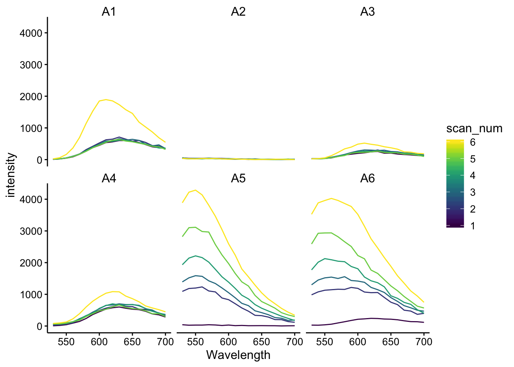
df_480_375raw <- read_csv("data/2019_09_24_etbr_PYOredox_ex480protocol_ex375.csv",
skip = 1) %>% gather(key = "id", value = "intensity", -Wavelength)
df_480_375 <- left_join(df_480_375raw, df_480_meta, by = "id")
ggplot(df_480_375, aes(x = Wavelength, y = intensity, color = scan_num,
group = scan_num)) + geom_path() + facet_wrap(~well)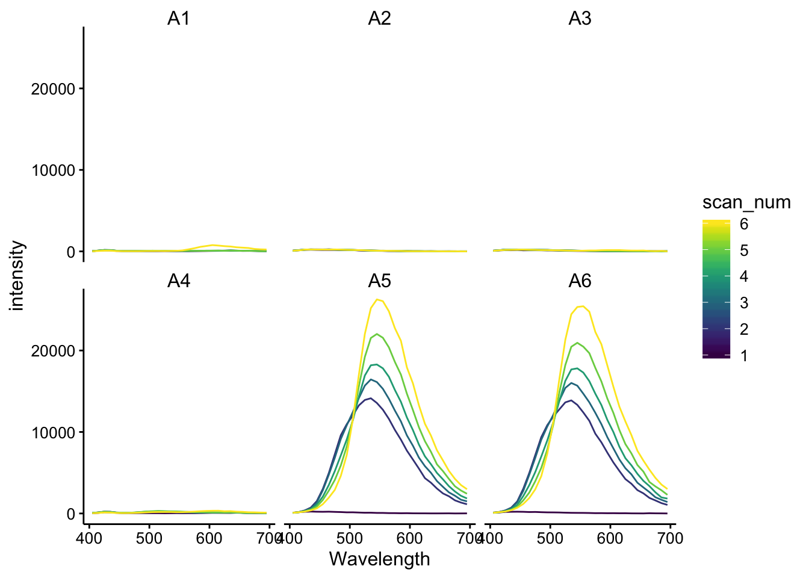 ## ex 510 scans for etbr
df_510_raw <- read_csv("data/2019_09_24_etbr_PYOredox_ex510protocol_ex510.csv",
skip = 1) %>% gather(key = "id", value = "intensity", -Wavelength)
df_510_meta <- read_csv("data/2019_09_24_etbr_PYOredox_ex510protocol_metadata.csv")
df_510 <- left_join(df_510_raw, df_510_meta, by = "id")ggplot(df_510, aes(x = Wavelength, y = intensity, color = dna_stage,
group = scan_num, shape = factor(stage_scan_num))) + geom_point() +
facet_wrap(~well, scales = "free")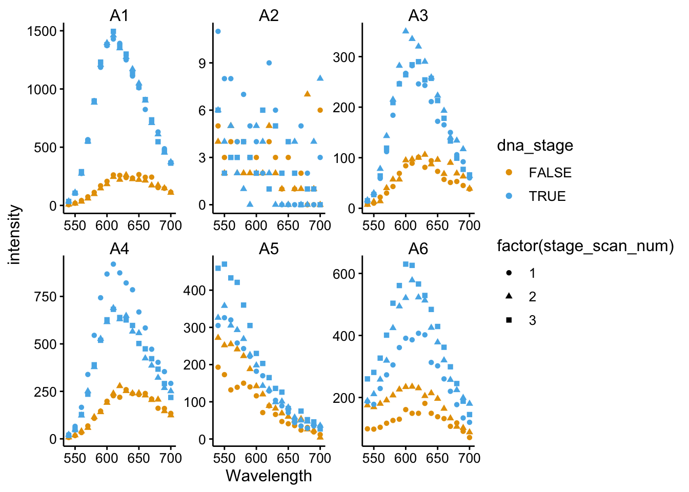
df_510_preDNA <- df_510 %>% filter(stage_scan_num == 2 & dna_stage ==
F)
df_510_postDNA <- df_510 %>% filter(stage_scan_num == 3 & dna_stage ==
T)
df_510_ratios <- left_join(df_510_preDNA, df_510_postDNA, by = c("Wavelength",
"well", "fluors", "tcep_added", "tcep_stage"), suffix = c("_preDNA",
"_postDNA")) %>% mutate(post_pre_ratio = intensity_postDNA/intensity_preDNA)
ggplot(df_510_ratios, aes(x = Wavelength, y = post_pre_ratio,
color = tcep_added)) + geom_hline(yintercept = 1) + geom_point() +
facet_wrap(~fluors)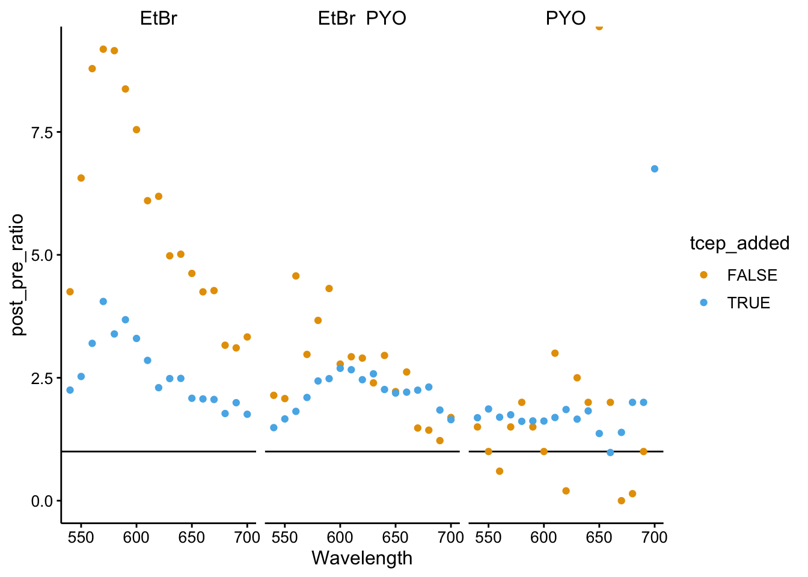
facet_labels = c(`FALSE` = "- TCEP", `TRUE` = "+ TCEP")
plot_etbr_redox <- ggplot(df_510_ratios %>% filter(Wavelength %in%
c(600, 610, 620, 630, 640, 650) & fluors != "PYO"), aes(x = fluors,
y = post_pre_ratio, color = Wavelength, group = Wavelength)) +
geom_hline(yintercept = 1, linetype = 2, color = "light gray") +
geom_point() + geom_line() + facet_wrap(~tcep_added, labeller = labeller(tcep_added = facet_labels)) +
ylim(0, NA) + labs(x = NULL, y = "postDNA / preDNA fluorescence",
title = "Competitive DNA binding - 5uM EtBr vs. PYO") + scale_x_discrete(labels = c("EtBr",
"EtBr\n+500uM PYO")) + scale_color_viridis(breaks = c(600,
650)) + theme(legend.justification = c(0.5, 1), legend.position = c(0.55,
1), legend.title = element_text(size = 10), legend.text = element_text(size = 8)) +
guides(color = guide_colorbar(barwidth = 0.5, barheight = 2.5))
plot_etbr_redox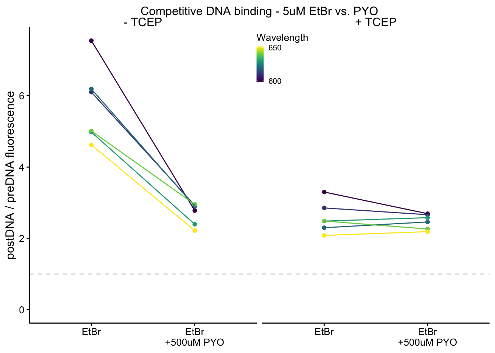
saveRDS(plot_etbr_redox, "../../Figures/2019_09_27_group_meeting/plot_etbr_redox")
ggplot(df_510_ratios %>% filter(fluors != "PYO"), aes(x = fluors,
y = post_pre_ratio, color = Wavelength, group = Wavelength)) +
geom_hline(yintercept = 1, linetype = 2, color = "light gray") +
geom_point() + geom_line() + facet_wrap(~tcep_added) + ylim(0,
NA)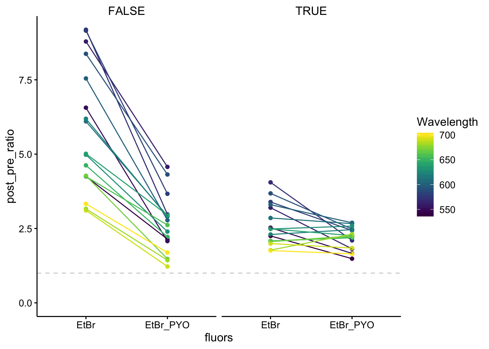
ggplot(df_510_ratios, aes(x = fluors, y = post_pre_ratio, color = Wavelength,
group = Wavelength)) + geom_hline(yintercept = 1, linetype = 2,
color = "light gray") + geom_point() + geom_line() + facet_wrap(~tcep_added,
scales = "free") + ylim(0, NA)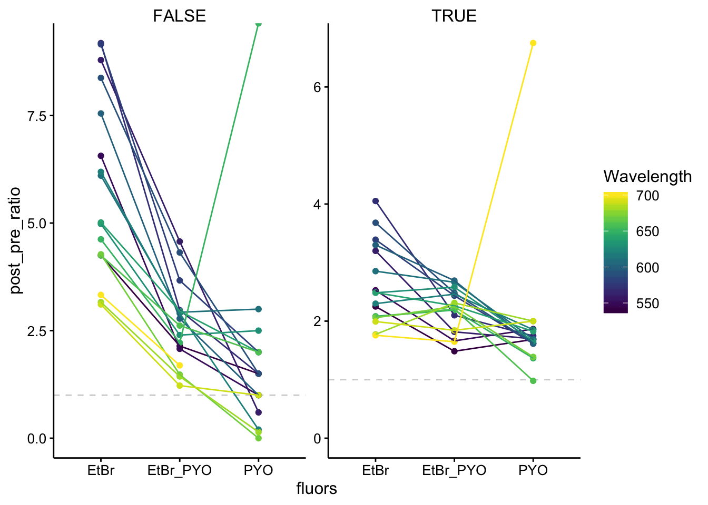
df_510_375raw <- read_csv("data/2019_09_24_etbr_PYOredox_ex510protocol_ex375.csv",
skip = 1) %>% gather(key = "id", value = "intensity", -Wavelength)
df_510_375 <- left_join(df_510_375raw, df_510_meta, by = "id")
ggplot(df_510_375, aes(x = Wavelength, y = intensity, color = dna_stage,
group = scan_num)) + geom_path() + facet_wrap(~well)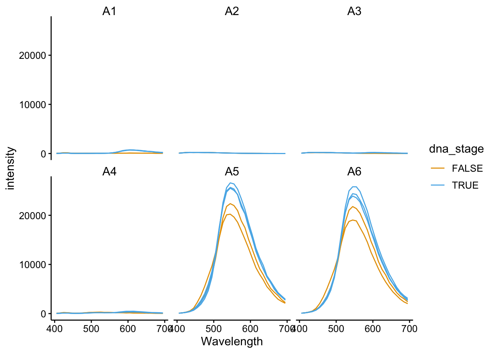
ggplot(df_510 %>% filter(tcep_added == T), aes(x = Wavelength,
y = intensity, color = dna_stage, group = scan_num)) + geom_path() +
facet_wrap(~well)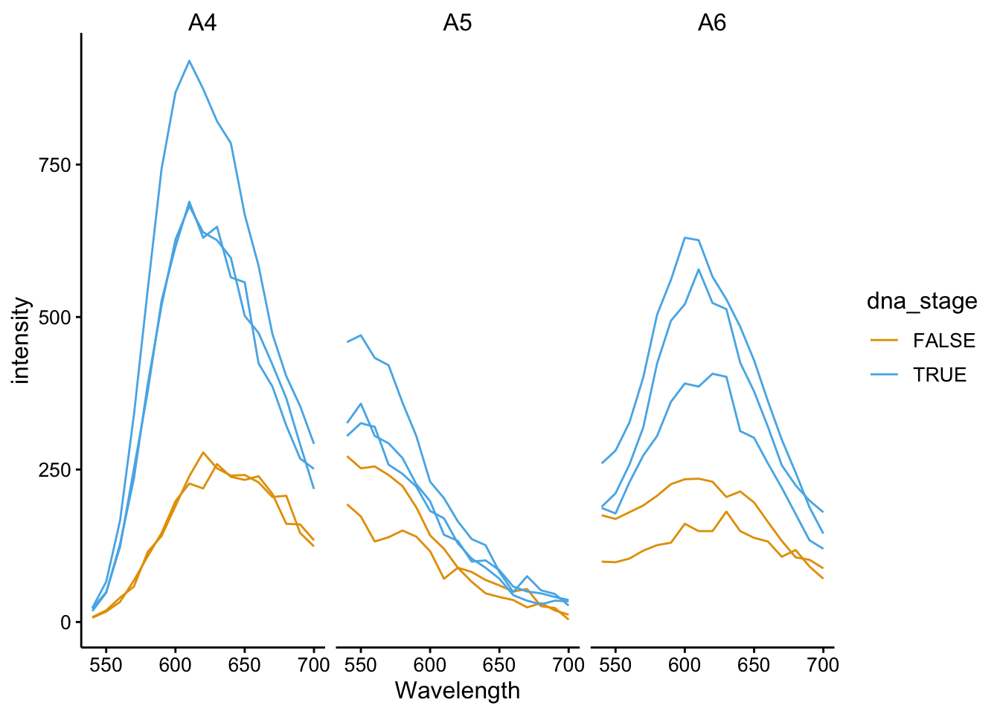
ggplot(df_510 %>% filter(tcep_added == T), aes(x = Wavelength,
y = intensity, color = well, group = well)) + geom_path() +
facet_wrap(~scan_num)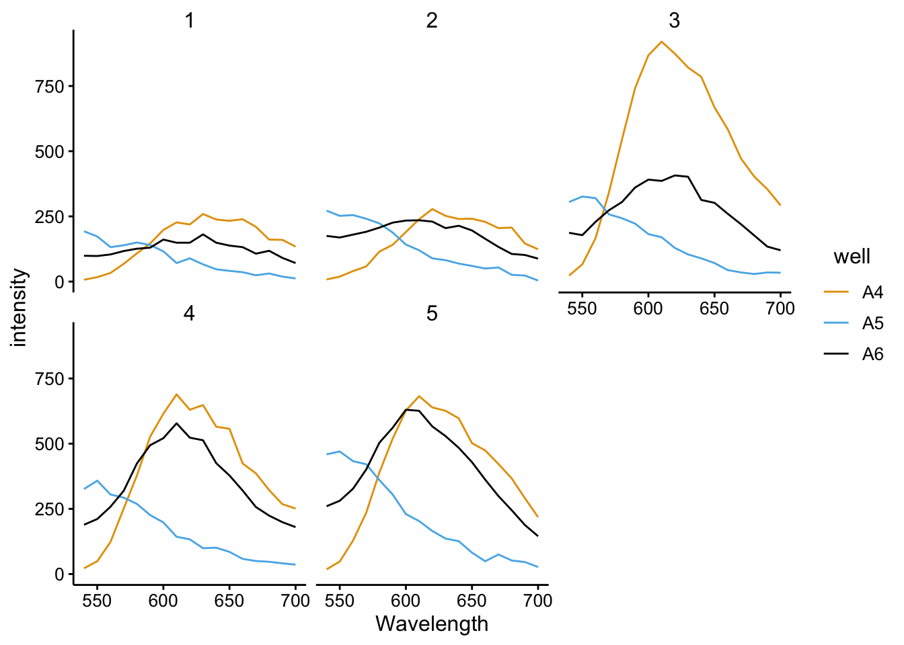
ggplot(df_510_375 %>% filter(tcep_added == T), aes(x = Wavelength,
y = intensity, color = dna_stage, group = scan_num)) + geom_path() +
facet_wrap(~well)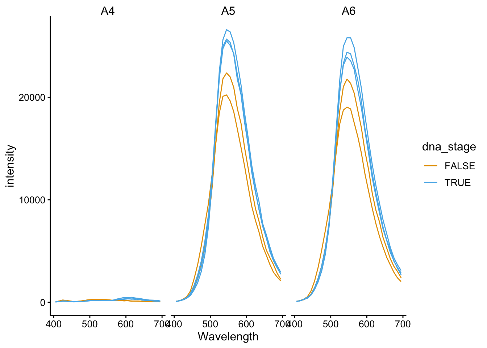
ggplot(df_510 %>% filter(fluors == "EtBr"), aes(x = Wavelength,
y = intensity, color = dna_stage, group = scan_num)) + geom_path() +
facet_wrap(~well)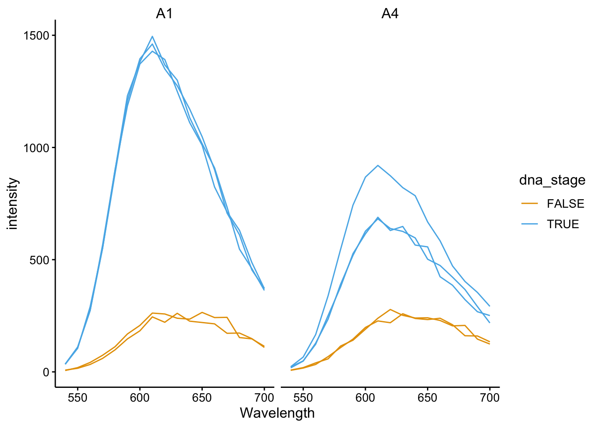